Los 4 tipos de usuario
| Rol | Quién es | Cómo entra |
|---|---|---|
| Solicitante | Persona que busca apoyo psicológico | Público, sin cuenta |
| Psicólogo | Voluntario que atiende casos | Se registra / recibe credenciales por correo |
| Coordinador | Gestiona la operación diaria | Recibe una invitación por correo |
| Administrador | Configura y supervisa la plataforma | Cuenta creada por el equipo técnico |
Parte A — Solicitante (persona que pide ayuda)
No necesita cuenta. Todo es anónimo y gratuito.
A.1 Pedir apoyo
- Entra a
https://TU-WEB.vercel.app. - Toca el botón grande "Necesito apoyo psicológico".
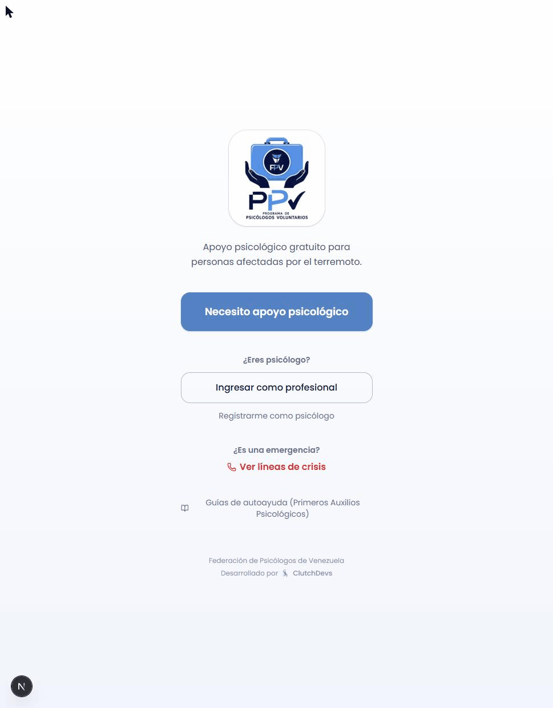
- Aparece la pregunta "¿Cómo te sientes en este momento?" con 5 opciones. Según la respuesta, el sistema enruta a una de dos vías (roja o verde).
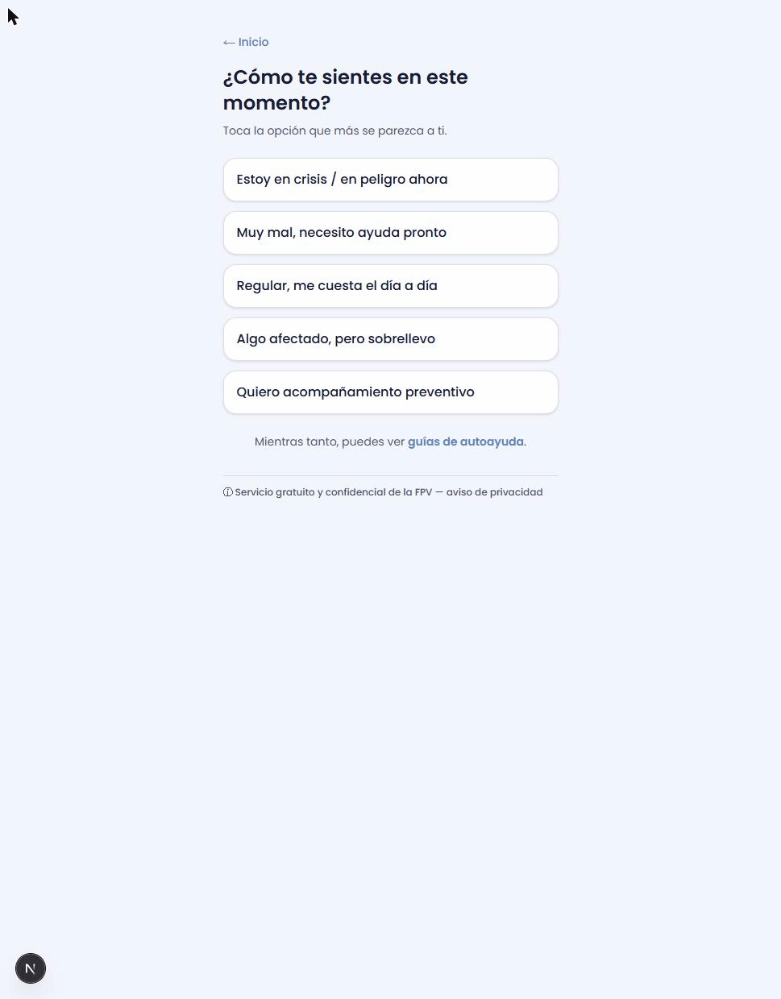
A.2 Ruta ROJA (riesgo alto / emergencia)
Si elige "Estoy en crisis / en peligro ahora" o "Muy mal, necesito ayuda pronto":
- Se muestran de inmediato las líneas de crisis (teléfonos para llamar ya).
- Puede pedir que lo contacten: "Recibir una llamada" o "WhatsApp silencioso", dejando un
teléfono en formato internacional con el código de país (
+58+ móvil, ej.+58 414 1234567) y la edad (ahora obligatoria). - Al enviar, la solicitud entra a la cola con prioridad alta.
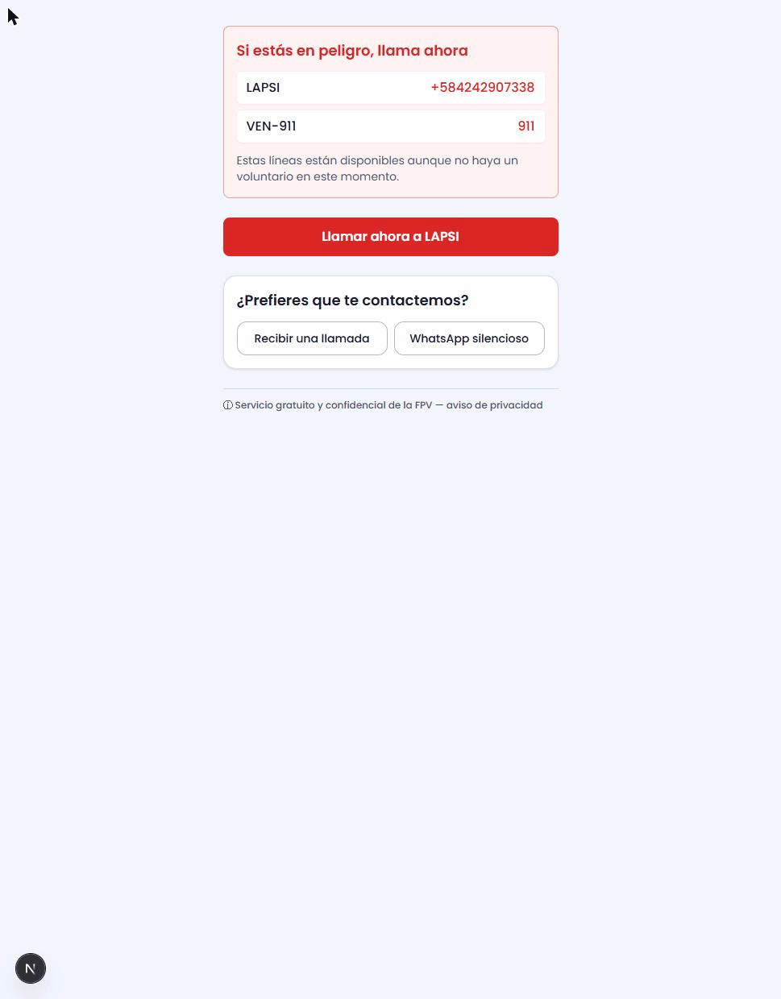
A.3 Ruta VERDE (seguimiento)
Si elige una opción más leve, entra a un formulario de 4 pasos:
- Síntomas — marca lo que aplique.
- Ubicación — estado (y ciudad opcional).
- Hábitos — cambios recientes (sueño, alimentación…), opcional.
- Contacto — quién solicita la ayuda (la persona afectada / un familiar / voluntario),
nombre (opcional), edad obligatoria (ayuda a asignar atención infantil o adulta), teléfono
con código de país
+58(ej.+58 414 1234567) y si prefiere llamada o WhatsApp.
Al enviar, verá la confirmación de que un psicólogo voluntario lo contactará.
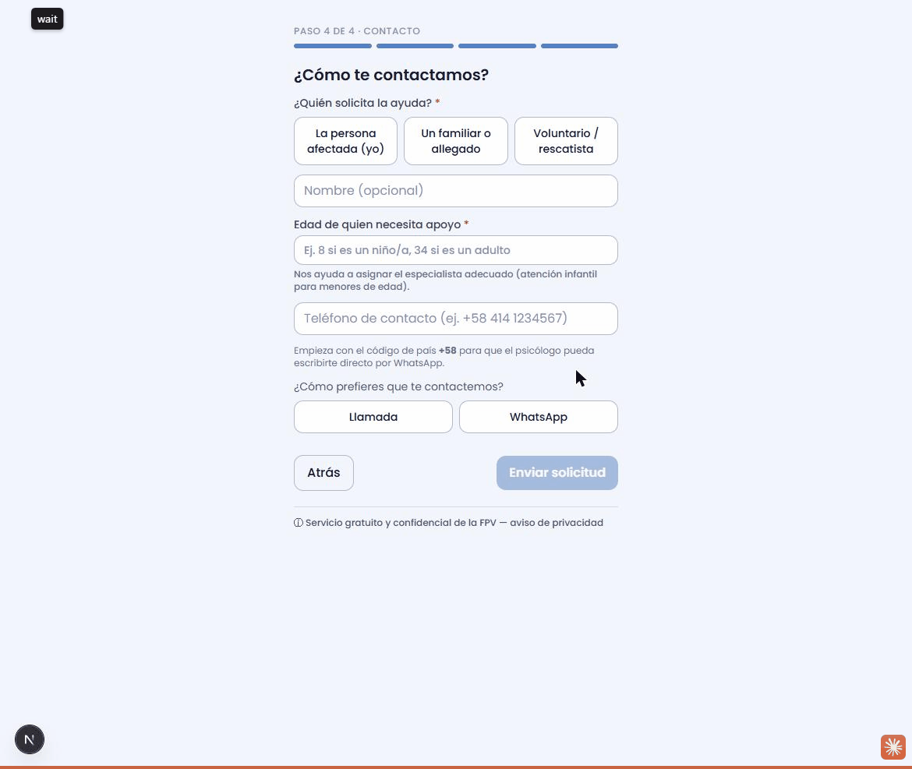
A.4 Guías de autoayuda
El enlace "Guías de autoayuda" (/guias) abre ejercicios de Primeros Auxilios Psicológicos
(respiración, anclaje, sueño, acompañar a un niño, duelo…).
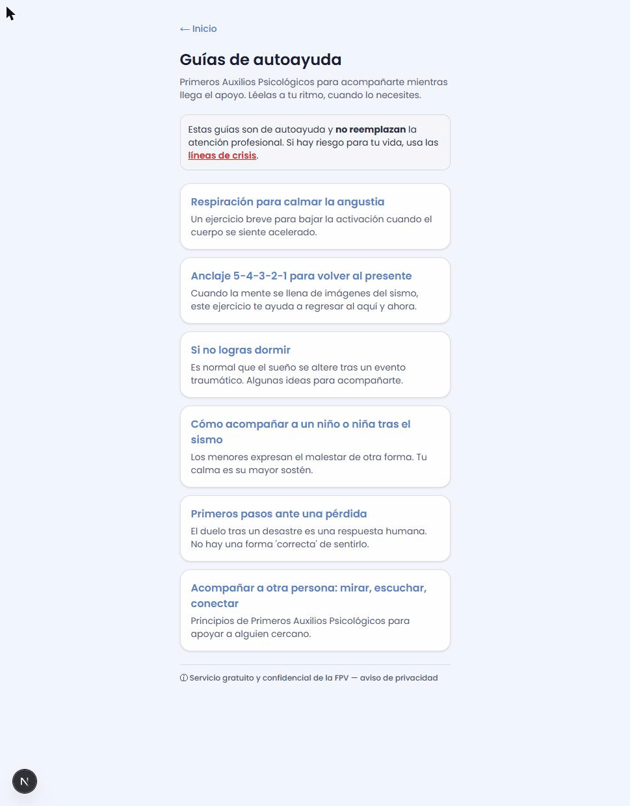
💡 Qué probar: crea varios casos con distintas respuestas (rojas y verdes) y con distintas edades (menor y adulto), para ver cómo se clasifican y asignan.
Parte B — Psicólogo voluntario
B.1 Registrarse
- En el inicio → "Registrarme como psicólogo" (
/registro). - Completa: nombre, documento (V/E/P), nº FPV, correo, teléfono, universidad, año de egreso, colegio, país y ciudad de residencia, modalidad (presencial / a distancia), disponibilidad horaria, formación en PAP, y acepta el consentimiento informado (obligatorio).
- Al enviar:
- Si el nº FPV se valida automáticamente → cuenta aprobada y llegan las credenciales por correo.
- Si no se puede validar → queda pendiente de revisión por un coordinador/administrador.
⚠️ En pruebas, si el padrón FPV no está conectado, los registros quedan pendientes y un admin los aprueba a mano (ver D.1). Alternativa: que el equipo técnico cree la cuenta directamente.
B.2 Entrar y ponerse disponible
- Inicio → "Ingresar como profesional" (
/login) → correo + contraseña. - Entras al portal del psicólogo.
- Arriba a la derecha, pon el interruptor en "Disponible" 🟢 para recibir casos (déjalo así con la pestaña abierta; en "En pausa" no se te asignan casos).
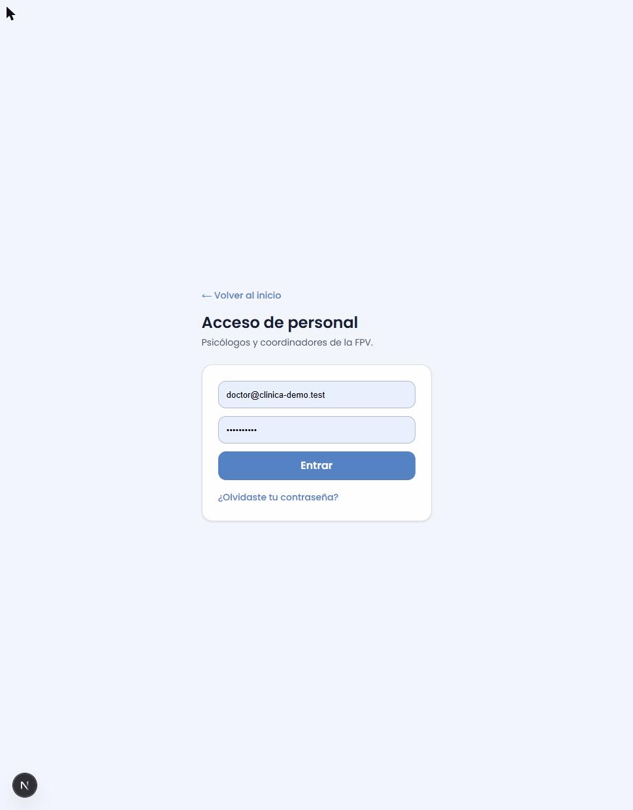
B.3 Tus casos
Inicio (/psicologo): saludo, indicadores (nuevos / en curso / atendidos este mes) y tus casos activos.
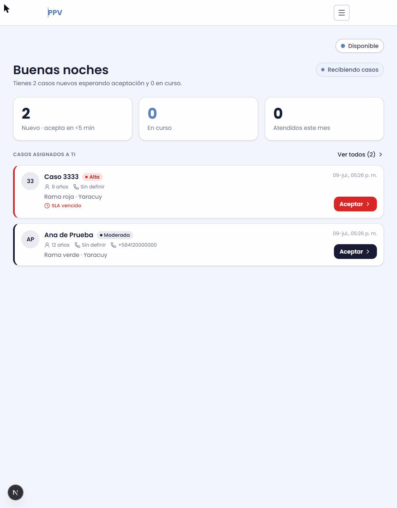
Mis casos (/psicologo/casos): lista completa con filtros (Estado: Activos / Cerrados / Todos ·
Riesgo · Rama) y un botón "Limpiar filtros". La lista se auto-refresca (no hace falta recargar).
En los casos aún sin aceptar, el teléfono aparece censurado (🔒 +58 ••• •••••••); se revela al
aceptar.
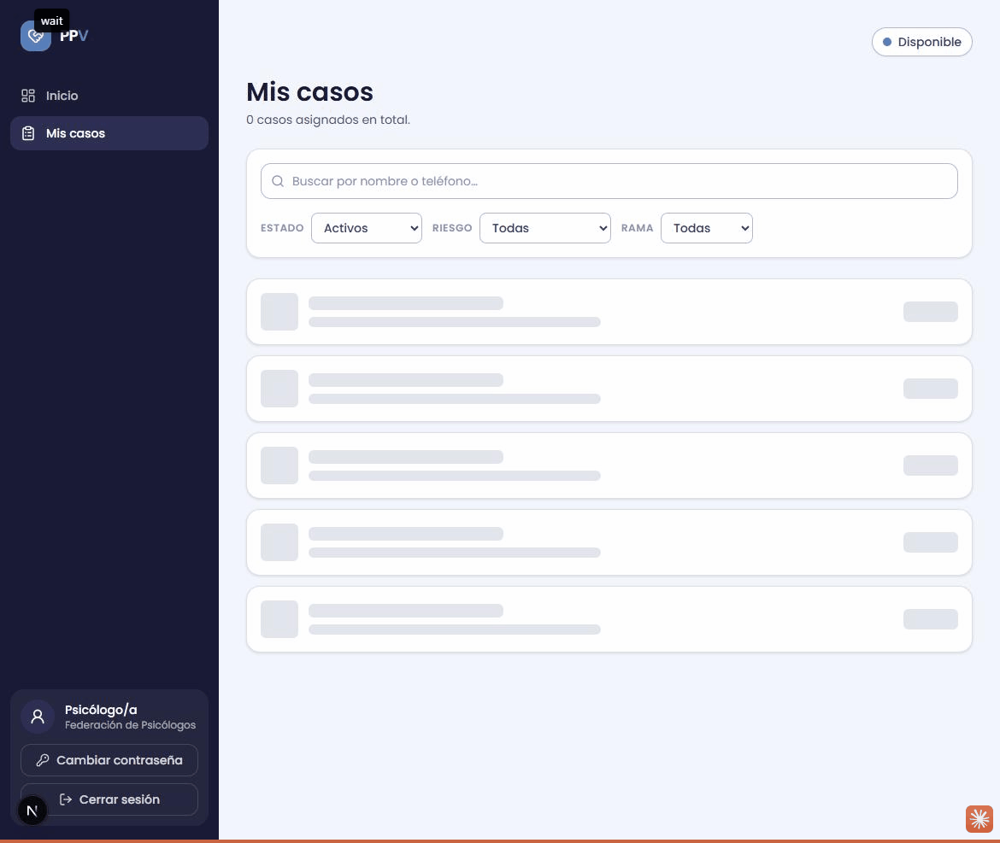
B.4 Atender un caso
- Abre un caso de tu lista. Verás su ficha con el riesgo, la edad, y las respuestas del solicitante: los síntomas que marcó y "¿Cómo se siente?" (su respuesta inicial de urgencia).
- Si está asignado (nuevo), el contacto está oculto (para no contactar antes de tiempo y no distorsionar las métricas). Toca "Aceptar caso" → entonces se revelan el nombre y el teléfono (con botones Llamar y WhatsApp).
- Con el caso aceptado puedes:
- Registrar notas clínicas (con reglas de seguridad, p. ej. el TEPT no se registra antes de 4 semanas del evento).
- Cerrar el caso con el formulario de cierre estructurado (contactabilidad, síntomas, técnicas, motivo, derivación y minutos de atención — números enteros, mínimo 1). El destino de la derivación admite más de un especialista (se marcan varios). El cierre es definitivo.
El detalle también se auto-refresca, así que si el caso cambia de estado lo verás sin recargar.
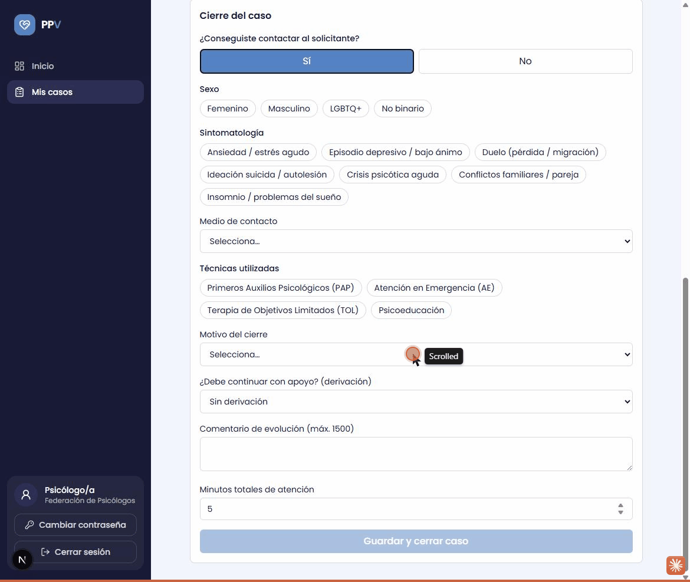
En el cierre, si marcas una derivación (Urgente o Seguimiento), el destino permite elegir varios especialistas a la vez.
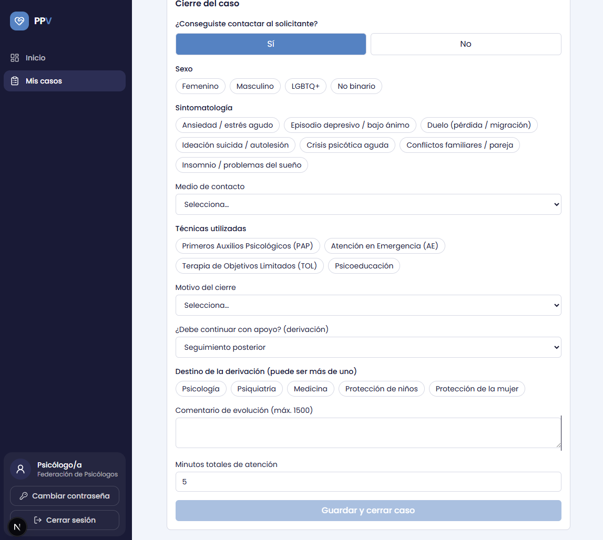
💡 Qué probar: ponte disponible, recibe un caso, comprueba que el teléfono está censurado, acéptalo (aparece el contacto y las respuestas del solicitante), agrega una nota y ciérralo con los minutos de atención. Verifica que sale de "Activos" y aparece en "Cerrados".
Parte C — Coordinador
C.1 Activar la cuenta (por invitación)
- Un administrador te invita por correo (ver D.5). El
correo trae un enlace a
/registro-coordinador?token=…. Todo coordinador es primero un psicólogo registrado, así que la invitación se envía al correo de un psicólogo existente. - Abre el enlace: se activa automáticamente el rol de coordinador en tu cuenta (no pide datos ni contraseña).
- Entra por "Ingresar como profesional" (
/login) con tu contraseña de psicólogo; tendrás acceso a ambos portales (psicólogo y coordinador).
C.2 Cola de casos en vivo (/coordinador)
Indicadores (riesgo alto, en cola, psicólogos en atención, espera promedio), alertas de SLA vencido, y la tabla de casos que se actualiza sola. Desde cada caso puedes Reasignar o Cerrar administrativamente. Al Reasignar, la lista solo ofrece psicólogos conectados y disponibles ahora mismo (para no dejar el caso con alguien ausente y vencer el SLA). Además, si un psicólogo entra en pausa con un caso asignado que aún no aceptó, ese caso vuelve a la cola automáticamente. Y si vence el SLA de un caso de alto riesgo sin que lo acepten, el sistema lo reasigna solo a otro voluntario disponible (distinto del que no aceptó) en cuanto haya uno en línea.
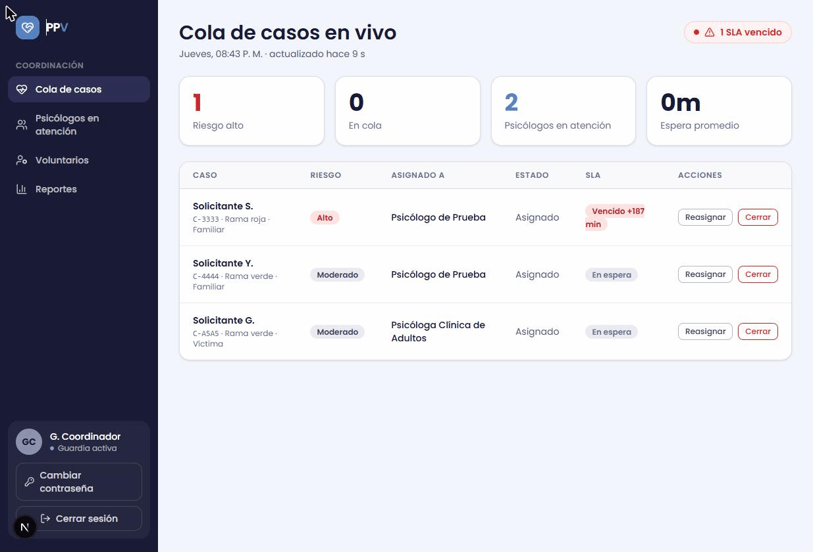
C.3 Psicólogos en atención (/coordinador/psicologos)
Quién tiene casos activos asignados ahora mismo y cuántos.
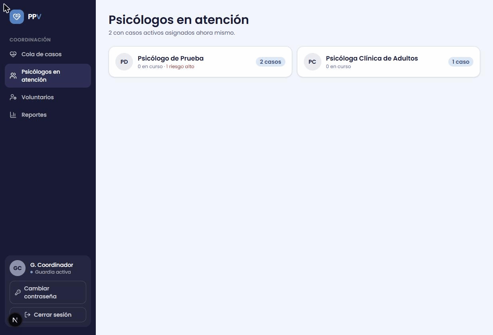
C.4 Voluntarios (/coordinador/voluntarios)
Aprobar / suspender psicólogos y dejar notas confidenciales. Con búsqueda, filtros por estado, un filtro "Disponibles ahora" (solo los psicólogos en línea en este momento; mientras está activo la lista se refresca sola) y un botón "Limpiar filtros".
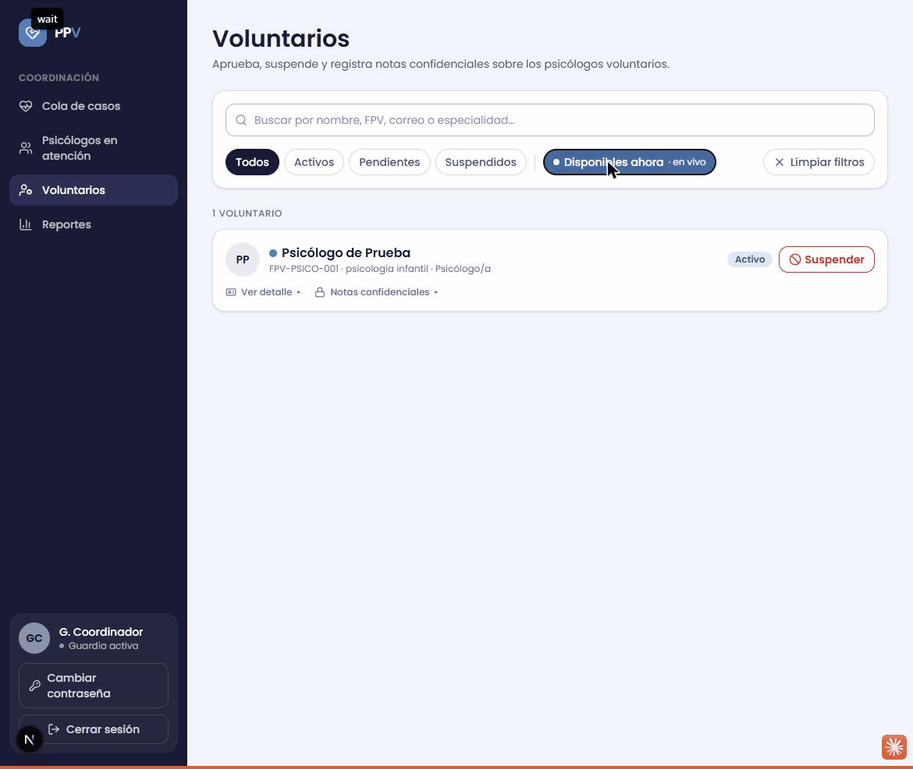
C.5 Reportes (/coordinador/reportes)
Estado operativo de la cola por categoría de riesgo.
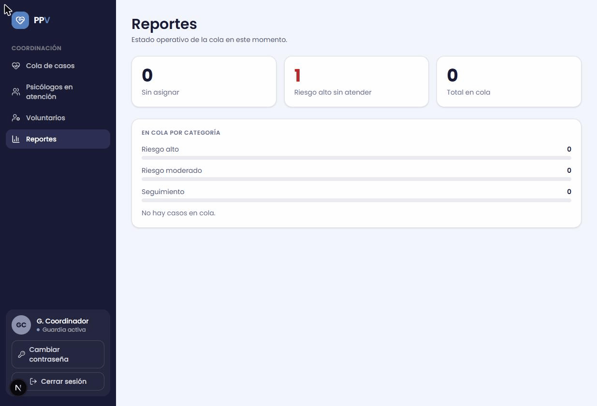
💡 Qué probar: con un caso en cola, reasígnalo a un psicólogo; suspende y reactiva un voluntario; revisa que los indicadores cuadren.
Parte D — Administrador
Entra por /login → panel /admin. En escritorio hay un menú lateral; en móvil, el ícono de
hamburguesa ☰ arriba a la derecha.
D.1 Excepciones de registro (/admin)
Psicólogos que no se validaron automáticamente. Puedes Aprobar (se activan y reciben credenciales por correo) o Rechazar cada uno.
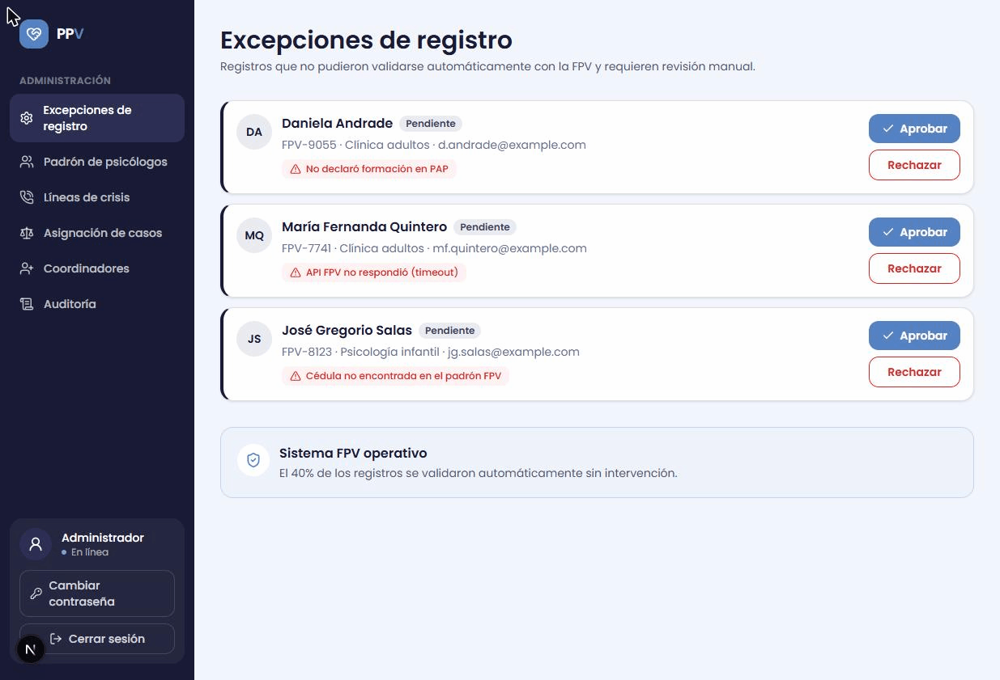
D.2 Padrón de psicólogos (/admin/padron)
Listado de todas las personas registradas, con búsqueda y filtro por estado. Solo lectura.
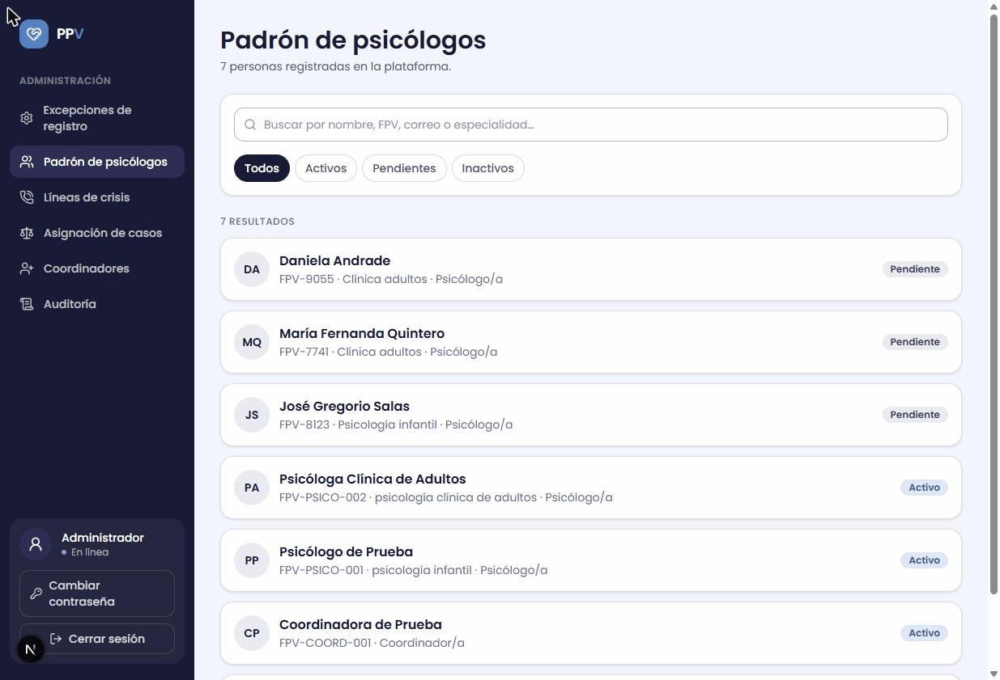
D.3 Líneas de crisis (/admin/lineas)
Crear / editar / activar / desactivar / eliminar las líneas de crisis que ve el público. El formulario de creación está arriba de la lista. Cada línea tiene nombre, teléfono, cobertura, prioridad y una franja horaria opcional en formato 24 h (0–24) con días de la semana para el ruteo automático (p. ej. una línea de 20:00 a 02:00). Desactivar la oculta temporalmente; Eliminar la borra de forma definitiva (pide confirmación).
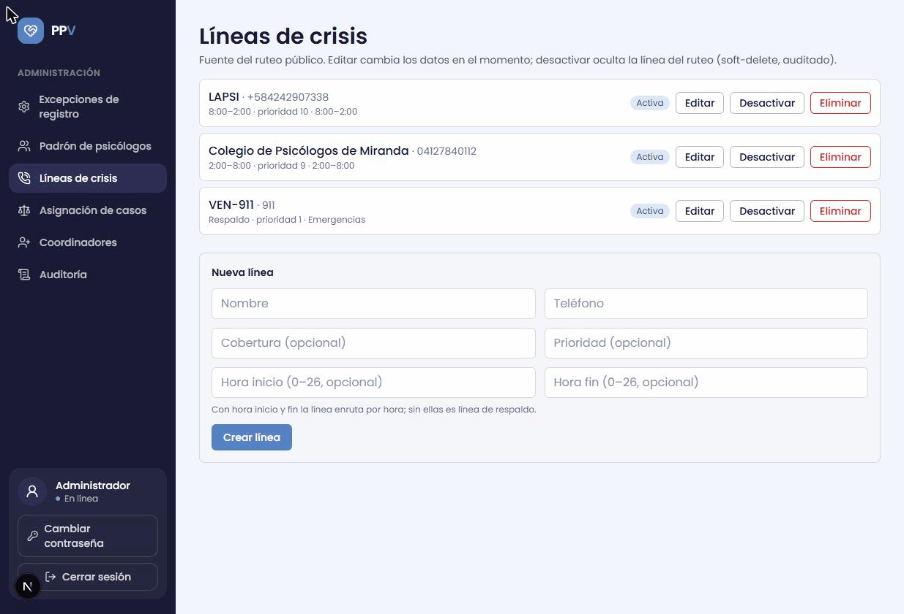
D.4 Asignación de casos (/admin/asignacion)
Define el tope de casos activos por psicólogo (balanceo de carga). Los casos de alto riesgo pueden exceder el tope para no quedar sin atención.
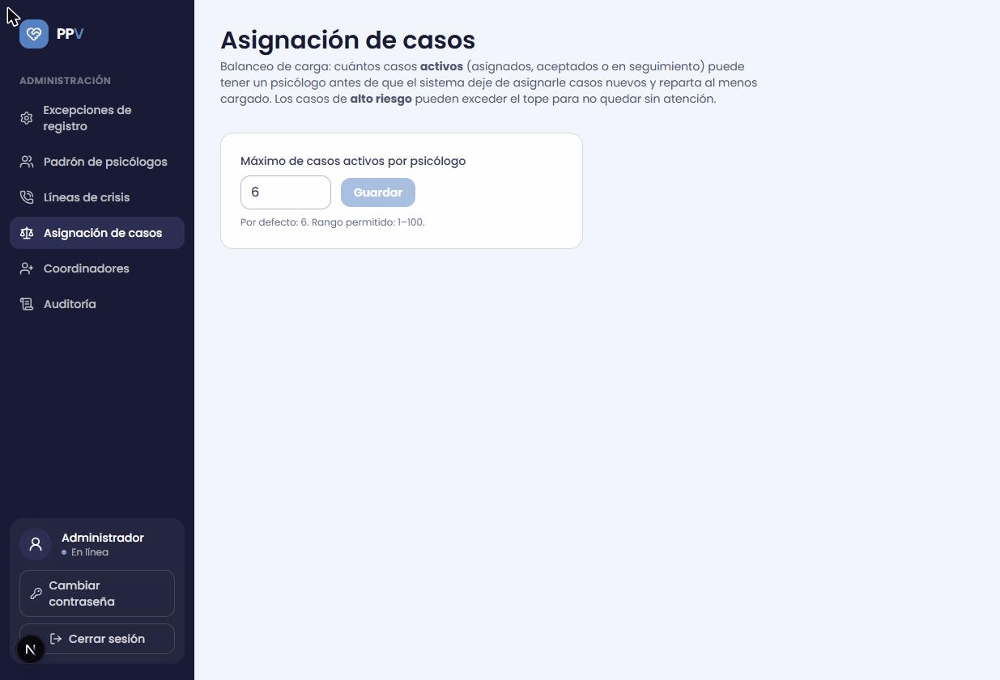
D.5 Coordinadores (/admin/coordinadores)
Invitar coordinadores por correo (el token también se muestra una vez por si hay que compartirlo a mano) y revocar invitaciones pendientes.
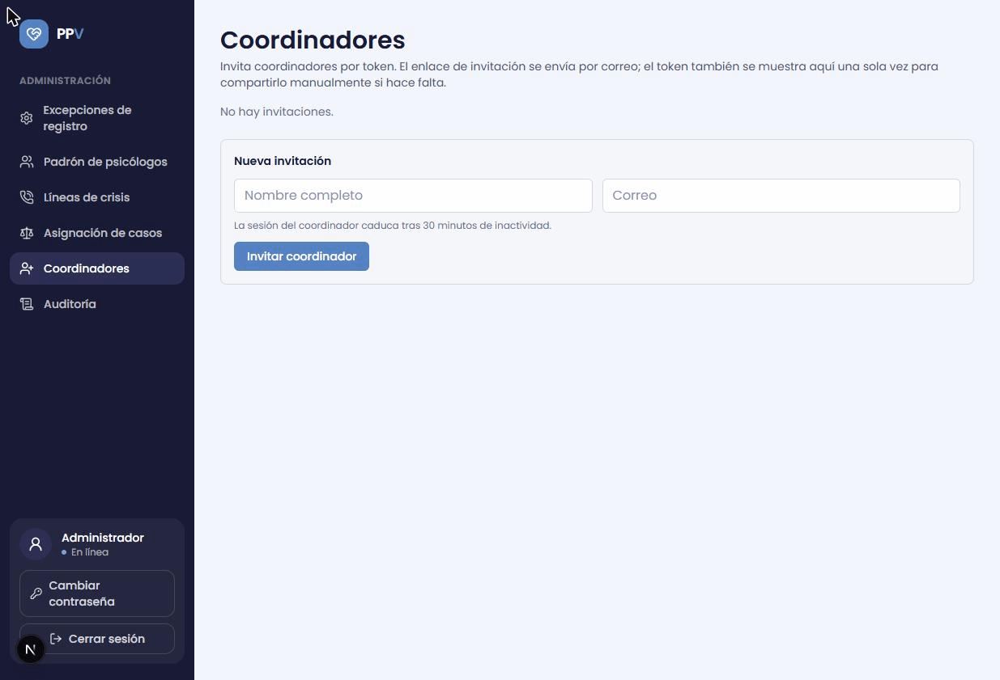
D.6 Auditoría (/admin/auditoria)
Registro inmutable de las acciones sensibles (quién hizo qué y cuándo), con filtro y paginación. No se puede editar ni borrar (por diseño).
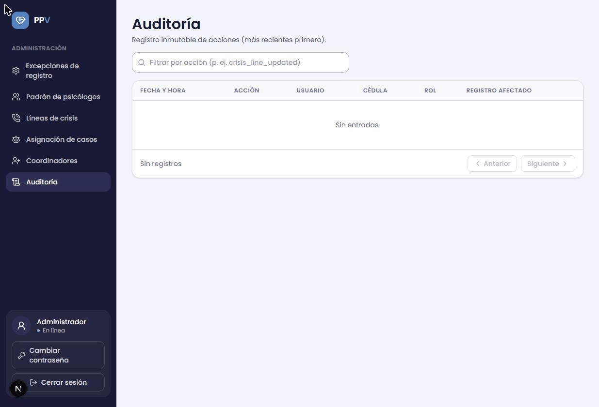
💡 Qué probar: aprueba un registro pendiente; crea una línea de crisis y compruébala en el intake; cambia el tope de asignación; invita a un coordinador; revisa que todo quede en Auditoría.
Guion de pruebas sugerido (recorrido end-to-end)
Un recorrido que ejercita todo el sistema, en orden:
- Admin → crea/verifica una línea de crisis → ajusta el tope de asignación → invita a un coordinador.
- Coordinador activa su cuenta desde el correo de invitación e inicia sesión.
- Psicólogo se registra (o el admin lo crea) → el admin lo aprueba en Excepciones → el psicólogo inicia sesión y se pone "Disponible".
- Solicitante (sin cuenta) crea dos casos: uno rojo (emergencia) y uno verde (seguimiento).
- El caso se auto-asigna al psicólogo en línea → el psicólogo lo acepta, agrega una nota y lo cierra.
- Coordinador revisa la cola en vivo, reasigna o cierra un caso, y mira Reportes.
- Admin revisa la Auditoría para ver el rastro de todas esas acciones.
Notas para las pruebas
- Es un entorno de pruebas: los datos son ficticios y se pueden borrar. El equipo técnico puede limpiar la base entre rondas (deja la configuración y los admins).
- Teléfonos del solicitante: móviles venezolanos con código de país
+58(ej.+58 414 1234567); ya no se acepta el0inicial (así el enlace de WhatsApp del psicólogo funciona directo). - Un caso abierto por persona: si el mismo teléfono envía otra solicitud mientras tiene un caso abierto, se reutiliza ese caso (no se duplica); podrá abrir uno nuevo una vez cerrado el anterior.
- Edad: ahora es obligatoria en el intake (roja y verde).
- Cédulas: hasta 8 dígitos (V/E); pasaporte (P) alfanumérico.
- Correos reales: si el envío SMTP está activo, las aprobaciones/invitaciones llegan a la bandeja (revisen también spam). Si no, el equipo técnico comparte las credenciales/tokens.
- Disponibilidad del psicólogo: para recibir casos debe estar "Disponible" con la pestaña abierta. Si se desconecta, deja de recibir casos nuevos (pero conserva los que ya aceptó).
- En móvil: el menú de cada portal está en el ícono de hamburguesa ☰ arriba a la derecha.
Cualquier duda o hallazgo durante las pruebas, anótenlo con la pantalla (rol), lo que hicieron y lo que esperaban vs. lo que pasó — así el equipo lo reproduce y corrige rápido.